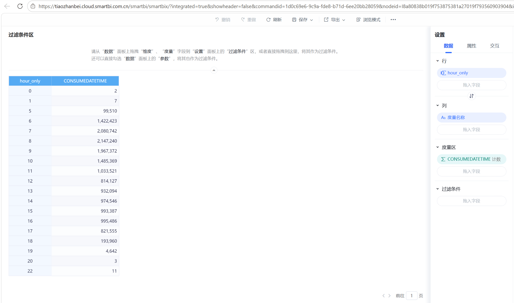
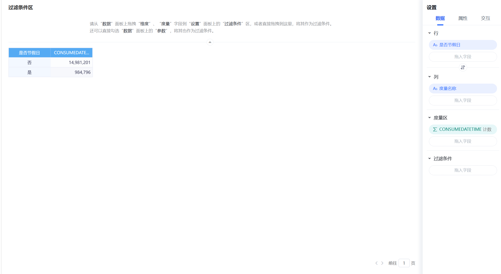
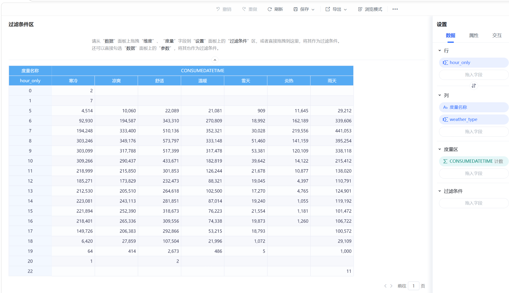
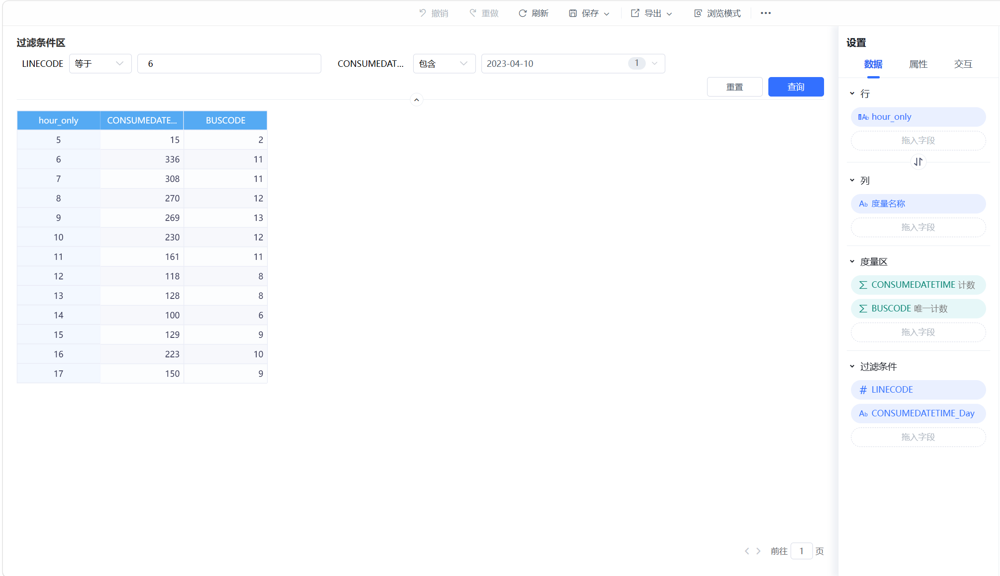
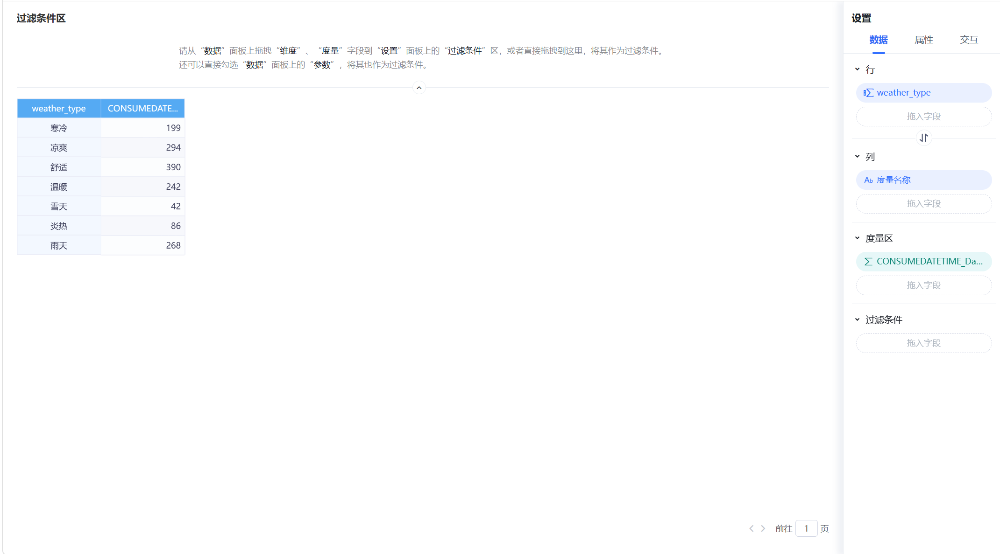

基于1500万条公交刷卡数据的透视分析与仪表盘搭建指南，涵盖客流态势、高峰识别、天气影响、调度优化五大主题
本项目在 Smartbi 平台上搭建了5个仪表板，覆盖从客流宏观态势到微观调度优化的完整分析链路。所有数据均来自三表关联后的公交刷卡数据表（约1500万条记录），在 Smartbi 内通过透视分析直接聚合计算。
| 仪表板 | 状态 | 核心内容 | 分析维度 |
|---|---|---|---|
| 仪表板A：公交客流态势总览 | 已完成 | KPI日趋势图、线路分布柱形图、节假日/工作日指标卡 | 日期 × 线路 × 客流量 |
| 仪表板B：高峰时段识别与预测 | 已完成 | 雷达图、热力图、高峰时段柱形图 | 小时 × 线路 × 客流量 |
| 仪表板C：多维度影响因素分析 | 待做 | 天气类型/温度/降雨与客流对比，早7时核心证据图 | 天气 × 温度 × 降雨 × 小时 × 客流量 |
| 仪表板D：调度现状分析 | 待做 | 运营车辆数交叉表、车辆vs客流散点图、载客率分析 | 线路 × 时段 × 车辆数 × 客流量 |
| 仪表板E：调度优化方案 | 待做 | 优化前后对比柱形图、指标卡、天气×时段矩阵 | 时段 × 天气 × 车辆数 × 优化幅度 |
CONSUMEDATETIME 字段的计数（即刷卡次数），非求和或平均值。Smartbi 透视分析中聚合方式需设为"计数"。透视分析设置：
【X轴/行】→ dt_date（或 CONSUMEDATETIME_Day，日期维度）
【Y轴/度量】→ CONSUMEDATETIME（计数）
该图表展示每日客流总量变化趋势，直观反映工作日与周末的客流波动。由于数据跨度为730天，Smartbi 仪表盘仅显示前100条数据，建议将X轴改为"月份"维度（新建计算列 month_label = LEFT(dt_date, 7)），仅24个月可完整显示。
【X轴/行】→ LINECODE（线路编号）
【Y轴/度量】→ CONSUMEDATETIME（计数）
展示各线路全时间段总客流量排名，可快速识别高负荷线路与低客流线路，为运力分配提供宏观依据。
【行】→ 是否节假日
【度量】→ CONSUMEDATETIME（计数）
数据结果：非节假日 14,981,201 次 vs 节假日 984,796 次。非节假日客流量约为节假日的15.2倍，但需注意非节假日天数（约650天）远多于节假日（约30天），直接比较总量会产生误导。建议在指标卡下方添加文字说明日均差异。
【行】→ 是否工作日
【度量】→ CONSUMEDATETIME（计数）
工作日总客流 11,075,925 次，非工作日 4,890,072 次。表面看工作日客流为2.3倍，但工作日天数（约483天）也是非工作日（约200天）的2.4倍，日均客流差异其实很小——工作日日均约22,932次/天，非工作日日均约24,450次/天，非工作日日均反而略高。
【角度/类别】→ hour_only（0-23小时）
【值/半径】→ CONSUMEDATETIME（计数）
【筛选器】→ LINECODE（多选框，默认显示全部线路）
雷达图能直观展示高峰时段的"凸出"形态。7-9时半径最长，形成明显的早高峰峰值；不同线路叠加可对比线路间的高峰差异。
【X轴/列】→ LINECODE（线路）
【Y轴/行】→ hour_only（0-23小时）
【值/颜色】→ CONSUMEDATETIME（计数）
这是仪表板B的核心图表。颜色设置：高客流→红色，中客流→橙色，无数据→白色/透明。评审可一眼看出：7-9时整行红色 = 早高峰特征明显，0-5时全白 = 深夜无运营，某些线路颜色更深 = 比较繁忙。
【X轴/行】→ hour_only（0-23小时）
【Y轴/度量】→ CONSUMEDATETIME（计数）
全线路整体客流按小时分布。7-9时柱子最高（早高峰峰值约215万次），17-18时次高，0-5时最低。建议在7-9时柱子上方标注"早高峰 7-9时"。
【X轴】→ weather_type（晴好/雨天/雪天/晴热/寒冷无雪）
【Y轴】→ CONSUMEDATETIME（计数）
【筛选器】→ is_workday = 1，LINECODE = 1
【X轴】→ weather_type
【Y轴】→ CONSUMEDATETIME（计数）
【筛选器1】→ hour_only = 7（只看7-8时，时间长度完全一致）
【筛选器2】→ is_workday = 1
【筛选器3】→ LINECODE = 1
这是解决天数不等问题的关键设计：所有天气类型都只统计"7-8时"这1个小时，时间范围完全一致，公平对比不同天气对早高峰的影响。
【X轴】→ temp_level（低于0℃/0-10℃/10-20℃/大于20℃）
【Y轴】→ CONSUMEDATETIME（计数）
【筛选器】→ is_workday = 1，LINECODE = 1
颜色建议按冷→暖渐变：深蓝→浅蓝→绿→橙红。同样存在天数差异问题，需加文字说明。
【X轴】→ rain_level（无雨/小雨/中雨/大雨）
【Y轴】→ CONSUMEDATETIME（计数）
【筛选器】→ is_workday = 1，LINECODE = 1
【X轴】→ hour_only
【Y轴】→ CONSUMEDATETIME（计数）
【系列/图例】→ temp_level（4条线，按温度等级分组）
【筛选器】→ is_workday = 1，LINECODE = 1
虽然不同温度的天数不同，但曲线形状对比仍有意义：高温线在7-9时凸起最明显（暖天出行高峰显著），低温线比较平（冷天出行减少）。
【行】→ LINECODE
【列】→ time_period（早间/早高峰/平峰/晚高峰）
【值】→ BUSCODE（唯一计数）
【筛选器】→ is_workday = 1
图A（早高峰运营车辆数）：【X轴】→ LINECODE（Top10），【Y轴】→ BUSCODE（唯一计数），【筛选器】→ time_period = 早高峰(7-9)
图B（早高峰客流量）：【X轴】→ LINECODE（同Top10），【Y轴】→ CONSUMEDATETIME（计数），【筛选器】→ time_period = 早高峰(7-9)
两张图并排对比：车辆多+客流少 = 运力过剩，车辆少+客流多 = 运力不足。
【X轴】→ BUSCODE（唯一计数）= 运营车辆数
【Y轴】→ CONSUMEDATETIME（计数）= 客流量
【颜色/分类】→ LINECODE（不同颜色代表不同线路）
【筛选器】→ time_period = 早高峰(7-9)，is_workday = 1
四象限解读：右上角（车辆多+客流多）= 繁忙线路；左上角（车辆少+客流多）= 车不够；右下角（车辆多+客流少）= 运力浪费；左下角（车辆少+客流少）= 冷门线路。
【X轴】→ time_period（早间/早高峰/平峰/晚高峰）
【Y轴】→ BUSCODE（唯一计数）
【筛选器】→ LINECODE = 1，is_workday = 1
【排序】→ 按 time_period_order 升序
在图E-1旁边放置4个指标卡，手动输入数字（数据来源：Python脚本生成的表5_当前调度方案分析.csv）：
| 卡片 | 大字内容 | 小字说明 | 背景色 |
|---|---|---|---|
| 早高峰(7-9) | 当前 X辆 → 建议 Y辆（减少Z%） | 早高峰运力调整建议 | 红色渐变 |
| 平峰(10-16) | 当前 X辆 → 建议 Y辆（减少Z%） | 平峰运力过剩，建议减少 | 蓝色渐变 |
| 晚高峰(17-19) | 当前 X辆 → 建议 Y辆（减少Z%） | 晚高峰客流少，大幅减车 | 橙色渐变 |
| 雪天调整 | 减少 30% | 雪天客流减少，相应减少运力 | 灰色渐变 |
【行】→ weather_type（天气类型）
【列】→ time_period（时段）
【值】→ CONSUMEDATETIME（计数）
【筛选器】→ LINECODE = 1，is_workday = 1
该交叉表直观展示不同天气下各时段的客流差异，为"天气调度调整"提供数据依据。例如下雪天早高峰的客流 vs 晴好天早高峰的客流。
【行】→ time_period（时段）
【值】→ BUSCODE（唯一计数）= 当前车辆数
【筛选器】→ LINECODE = 1，is_workday = 1
条件格式：调整幅度 > 5% → 红色（需加密），< -5% → 蓝色（可减车），-5%~5% → 绿色（保持）。
以下5张图片均为 Smartbi 透视分析（即交叉表/数据透视表）的配置截图。透视分析是 Smartbi 的核心功能，通过拖拽字段到行、列、度量区域，实现对多维数据的灵活聚合与探索。

行维度：hour_only（0-22小时，提取自 CONSUMEDATETIME 的小时部分）
度量：CONSUMEDATETIME（计数聚合，即刷卡次数）
列维度：度量名称（单度量时自动生成）
该透视表展示了全线路全天各小时的客流分布。从数据中可以清晰看到：7-9时为早高峰核心时段（7时约208万次、8时约215万次为全天峰值），10时后客流逐步回落至约100万次水平并维持到17时，18时骤降至约19万次，19时后几乎无客流。凌晨0-1时仅有零星刷卡记录（2-7次），2-5时无数据，说明公交线路在此期间停止运营。这一分布特征为后续的分时段调度策略提供了基础依据。

行维度：是否节假日（二值分类：是/否）
度量：CONSUMEDATETIME（计数聚合）
结果显示了节假日与非节假日的客流总量悬殊：非节假日约1498万次（占93.8%），节假日仅约98万次（占6.2%）。这一差异主要源于两个因素：一是非节假日天数（约650天）远多于节假日天数（约30天），二是节假日出行需求本身确实较低。在分析报告中，我们采用了日均客流量指标来消除天数差异的影响，并进一步通过分层建模（工作日/周末/节假日三层模型）来捕捉节假日独特的客流模式。

行维度：hour_only（0-22小时）
列维度：weather_type（7种天气类型：寒冷、凉爽、舒适、温暖、雪天、炎热、雨天）
度量：CONSUMEDATETIME（计数聚合）
这是双维度交叉透视的典型应用，将小时和天气类型两个维度交叉，形成7×23的矩阵表。从表中可以观察到：各天气类型下的客流都遵循"早高峰凸起、午间平稳、傍晚骤降"的规律，但峰值幅度存在差异——舒适天气下各时段客流普遍较高，雪天和炎热天气下客流明显偏低。值得注意的是，雨天的客流并未显著减少，说明降雨对公交出行的影响相对有限（可能因为雨天反而促使更多人选择公交而非步行/骑行）。该透视表为仪表板C中的"早7时各天气对比"核心证据图提供了数据基础。

行维度：hour_only（5-17小时）
度量1：CONSUMEDATETIME（计数）= 客流量
度量2：BUSCODE（唯一计数）= 运营车辆数
筛选器：LINECODE = 6，CONSUMEDATETIME_Day = 2023-04-10
该透视表聚焦于单条线路、单日的精细化分析，同时展示客流量和运营车辆数两个度量。数据显示线路6在2023年4月10日（周一）的运营特征：早高峰6时客流量最高（336次），对应11辆车运营；随后客流逐步下降至14时的100次低点，仅6辆车运营；16时出现午后小高峰（223次，10辆车）。车辆数随客流波动的特征表明当前调度具有一定的需求响应能力，但峰谷车辆数差异（11辆 vs 6辆）小于客流差异（336次 vs 100次），隐含平峰时段运力可能存在过剩。

行维度：weather_type（7种天气类型）
度量：CONSUMEDATETIME_Day（计数，或理解为天数统计）
该透视表统计了两年数据中各天气类型出现的天数，对理解其他天气相关分析至关重要。分布如下：舒适天气最多（390天），凉爽（294天）、雨天（268天）、温暖（242天）居中，寒冷（199天）和炎热（86天）较少，雪天最少（仅42天）。这一分布特征解释了为什么在天气影响分析中不能直接比较总量——舒适天气390天的客流总量自然远高于雪天42天的总量，必须使用"固定时段"（如仅比较早7时）或"日均"指标来消除天数差异。这也验证了仪表板C中C-2（早7时各天气对比）设计思路的必要性。
| 操作 | 步骤 |
|---|---|
| 新建图表 | 左侧图表面板 → 拖入对应图表到画布 |
| 设置筛选器 | 从字段列表拖字段到"筛选器区域"（图表上方/右侧） |
| 条件格式（颜色渐变） | 右键值字段 → 条件格式 → 颜色渐变 → 设最低/最高颜色 |
| 条件格式（按值变色） | 右键值字段 → 条件格式 → 按值着色 |
| 文本/指标卡 | 左侧组件面板 → 拖入"文本"或"指标卡" → 手动输入 |
| 新建计算列 | 字段列表 → 右键 → 新建计算字段 → 输入CASE公式 |
| 设置字段聚合方式 | 左键Y轴字段 → 下拉菜单 → 选"计数/唯一计数/求和" |
| 排序 | 右键图表 → 排序 → 按某字段升序/降序 |
| 导入新数据 | 数据源 → 导入 → 选CSV文件 |
| 限制 | 影响 | 应对方法 |
|---|---|---|
| 仪表盘最多显示100条 | 日KPI图无法完整显示730天 | 改用"月份"维度，或加文字说明 |
| CONSUMEDATETIME只能"计数" | 无法在透视表中直接做"日均"计算 | 用"占比"替代，或手动标注天数差异 |
| 不同时段天数不同 | 总量对比不公平 | 在固定时段（如早7时）对比，或加说明 |
| 计算列不能用聚合函数 | 不能在维度列里写COUNT/AVG | 聚合计算在图表的Y轴/值区域完成 |